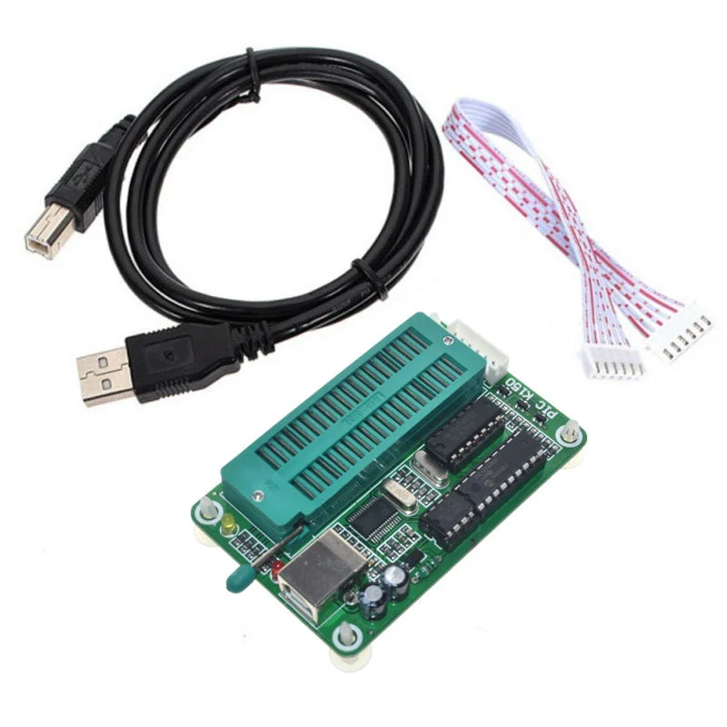
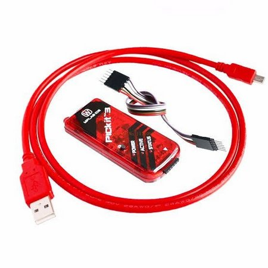
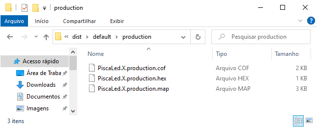

Episódio 7: Gravação do PIC16F628A com os hardwares K150 e o PICkit 3
Neste episódio iremos fazer a gravação do projeto visto no episódio anterior e faremos uso de dois equipamentos para a gravação: o gravador K150 e o gravador PICkit 3.
O gravador K150 conforme Figura 7.1, pode ser encontrado no mercado livre e também em algumas lojas de eletrônica online, e o site do projeto é http://www.kitsrus.com/pic.html e um passo a passo de uso pode ser baixado em https://www.sigmaelectronica.net/manuals/k150.pdf.
| Figura 7.1 - Gravador K150 |
|---|
|  |
| Fonte: https://www.baudaeletronica.com.br/gravador-de-pic-usb-k150.html |
Para o processo de gravação, utiliza-se o programa Microbrn conforme Figura 7.2 que também se encontra no link do projeto e de fácil utilização.
| Figura 7.2 - Programa Microbrn[c] |
|---|
|
|
| Fonte: Próprio autor (2020) |
O driver de instalação para o dispositivo é encontrado em http://www.profilic.tw/US/ShowProduct.aspx?p_id=225&pcid=41 ou http://www.profilic.tw/US/ShowProduct.aspx?p_id=223&pcid=126 e após a instalação pode-se conectar o dispositivo K150 e executar o aplicativo Microbrn disponível em http://paginapessoal.utfpr.edu.br/amauriassef/disciplinas/sistemas-microcontrolados/gravador-microburn-k150.
Ao abrir o aplicativo há a necessidade de selecionar a porta COM onde está associada o K150. Para isso abra o gerenciador de dispositivo conforme Figura 7.3 e acesse a opção Portas (Ports) e veja qual COM está associada ao K150.
| Figura 7.3 - Gerenciador de dispositivo[d] |
|---|
|
|
| Fonte: Próprio autor (2020) |
No menu , acesse a opção e digite o número da porta. No mesmo menu , acessa a opção e selecione a opção K150.
O próximo passo é a escolha do microcontrolador, na opção do lado direito, na parte inferior da janela. Ao escolher o microcontrolador PIC16F628A (16F628A) no dropbox, no conector ZIF exibido no programa, exibirá a posição a ser inserido no soquete.
Agora clique no botão para carregar o arquivo para a tela principal. Neste momento já se pode clicar no botão para gravar o programa na memória de programa do microcontrolador
Outra opção de gravação é pelo modo ICSP (In-Circuit Serial Programming) acessando o menu e a opção . Essa opção dá a capacidade de gravação no circuito, sendo necessárias algumas modificações para proteção de algum componente sensível.
No modo ICSP os pinos para uso na programação são: VPP1, <LOW, DAT, CLK, VCC e GND. Para a programação do PIC16F628A utiliza-se a relação contida na Tabela 7.1.
| Tabela 7.1 - Relação dos pinos do K150 e PIC16F628A | ||||||||||||||
|---|---|---|---|---|---|---|---|---|---|---|---|---|---|---|
|
||||||||||||||
| Fonte: MICROCHIP 2020 (b) pag. 114 |
Outro passo a passo de gravação usando o gravador pode ser visto em https://www.filipeflop.com/blog/como-utilizar-gravador-de-pic-usb-k150/.
Já que iniciamos o conceito de gravação usando o ICSP, passamos para a gravação usando o PICkit 3 "genérico'', conforme Figura 7.4, sendo que o PICKit3 tem 6 pinos conforme Tabela 7.4.
| Figura 7.4 - Gravador PICkit 3 |
|---|
|  |
| Fonte: https://www.arduinobrasilshop.com.br/pickit3-kit-programador-gravador-de-pic |
| Tabela 7.2 - Identificação dos pinos do PICkit 3 | ||||||||||||||
|---|---|---|---|---|---|---|---|---|---|---|---|---|---|---|
|
||||||||||||||
| Fonte: MICROCHIP 2021 pag. 15 |
A conexão do PICkit 3 com o PIC16F628A é semelhante a da conexão do K150 com o PIC16F628A no modo ICSP.
A diferença no processo de gravação está no software que é usado, onde o K150 faz uso do MicroBrn enquanto que o PICkit 3 faz uso do PICkit 3 Programmer.
Um tutorial usando o gravador PICkit 3 pode ser encontrado em https://www.filipeflop.com/blog/como-utilizar-gravador-pic-pickit-3/.
Para este episódio falaremos sobre o processo de gravação usando o PICkit 3 e o programa PICkit 3 Programmer, mas sabendo que o processo é semelhante para o gravador K150 com o programa Microbrn no modo ICSP.
No episódio anterior vimos o exemplo de uso das portas do microcontrolador trabalhando como entrada ou saída no fluxograma e no código e neste episódio vamos fazer a gravação do binário gerado neste projeto no microcontrolador.
O arquivo binário com extensão .hex (arquivo gerado no projeto para ser usado no gravador) está dentro do diretório do projeto em C:\Users\<diretório do usuário>\MPLABXProjects\<nome do projeto>.X\dist\default\production.
Supondo que o usuário seja "Everton" e o projeto seja "PiscaLed" o endereço completo do diretório com o seguinte arquivo .hex será C:\Users\Everton\MPLABXProjects\PiscaLed.X\dist\default\production\PiscaLed.X.production.hex. A Figura 7.5 exibe os arquivos dentro do diretório do projeto "PiscaLed".
| Figura 7.5 - Arquivo .hex do projeto |
|---|
|  |
| Fonte: Fonte: Próprio autor (2020) |
Agora que já sabemos o diretório onde está o arquivo necessário para a gravação, precisamos executar o PICkit 3 Programmer para fazer a gravação. A Figura 7.6 exibe a tela do programa PICkit 3 Programmer e para selecionar o arquivo .hex, precisamos acessar o menu → ... [e]xxxxxxxxxxxxxxxxxxxxxxxxxxxxxxxxxxxxxxxxxxxxxxxxxxx.
| Figura 7.6 - Tela inicial do programa PICkit 3 Programmer[f] |
|---|
|
|
| Fonte: Fonte: Próprio autor (2020) |
Após a seleção do arquivo .hex, e também da conexão do microcontrolador com o PICkit 3, pressiona-se o botão “Write” para gravar o arquivo na memoria de programa do PIC16F628A, e ao final da gravação há a informação de “Programming Sucessfull” em verde como mostrado na Figura 7.7 o processo de gravação finalizado.
| Figura 7.7 - Tela do PICkit 3 programmer após gravação[g] |
|---|
|
|
| Fonte: Fonte: Próprio autor (2020) |
Com isso vamos ao teste de funcionamento pós-gravação para verificar se nossa lógica e nosso código condiz com a ideia inicial ou teremos que fazer algumas modificações.